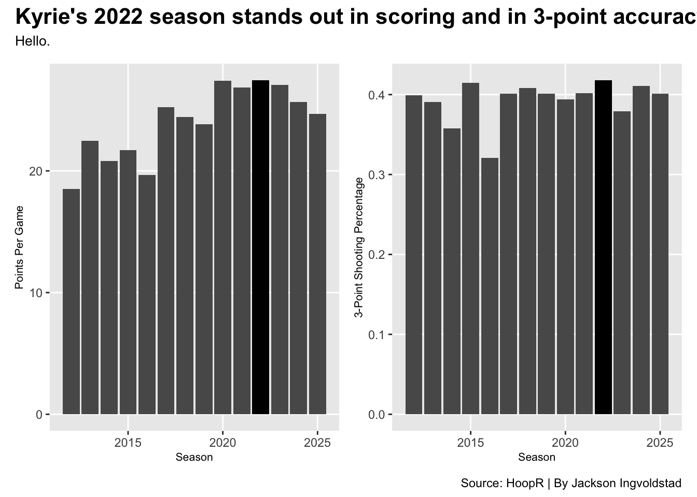

Kyrie Irving and his Ability to Stay Poised Amongst Controversy
basketball
nba
Author
Jackson Ingvoldstad
Published
November 17, 2025
Kyrie Irving is polarizing. That has been known for some time. While he has been an NBA superstar since being drafted first overall by the Cleveland Cavaliers in 2011, he has made a name for himself among non-basketball fans for the wrong reasons.
On February 17th, 2017, reigning NBA champions Richard Jefferson and Channing Frye released an episode of their podcast in which co-champion Irving hopped on the mic. The episode was entertaining as they talked about all sorts of things, such as basketball, and well, not basketball. It was for the worst. Their conversation drifted into a topic that shook our round planet. Irving told the world that he believes the Earth is flat. He went on and on about his theory, and it shook not only the sports community but the whole country. It still haunts him to this day. Irving made himself the talk of the town, and none of it had to do with his skills on the court.
For many athletes, outside controversies and drama can lead to damaged performance on the court, field, rink, etc. Did Irving allow himself to succumb to the outside pressure? To measure one’s overall efficiency on the court, the all-in-one Player Efficiency (EFF) metric comes into play. EFF is constructed with the equation (points + rebounds + assists + steals + blocks) - (field goals attempted - field goals made) - (free throws attempted - free throws made) - turnovers. How did Irving’s efficiency vary amidst the drama?
Irving had a burst of high efficiency while/after his claims were in news circulation. No drastic changes in his EFF were clear, but it is clear that his play wasn’t plagued by his comments.
Time is one’s best PR. Irving’s name in non-sports media eventually faded out after swtiching teams a couple of times, and an entire pandemic hit the round Earth. However, Irving earned his spot in your newspaper in a timely manner.
In 2021, Irving, who was now a part of the Brooklyn Nets, made it clear that he would not be following New York’s instituted COVID vaccination mandate. This forced the Nets to not allow Irving to play, attend practices, or attend any team meetings. Irving was stern on his anti-vaccination stance and missed a majority of the 2021-2022 season. By early 2022, Irving was allowed to play away games outside of New York, and after a while, New York lifted their mandate that allowed Irving to play.
Not only did Irving’s stance on COVID affect his ability to play in games, but it also dampened his view to fans and basketball watchers everywhere. Irving played in just 29 games that year, yet he made every one of those games count, as he recorded several career highs in that season.
Code
library(tidyverse)library(hoopR)library(ggalt)library(ggtext)library(waffle)library(gt)library(patchwork)combinedstats <-read_csv("nba_player_combined_stats_2001_2025.csv")|>filter(Player=="Kyrie Irving")kyrieavg <- combinedstats|>group_by(Season)|>filter(Player =="Kyrie Irving", MP !="1478", MP !="763")|>mutate(ppg = PTS/G) |>summarize(`3P%`, ppg)kyrie22 <- kyrieavg|>filter(Season ==2022)bar1 <-ggplot() +geom_bar(data=kyrieavg, aes(x=Season, weight=ppg)) +geom_bar(data=kyrie22, aes(x=Season,weight=ppg),fill="black")+labs(x ="Season",y ="Irving's Points Per Game" ) +theme_minimal()+theme(plot.title =element_text(size =16, face ="bold"),axis.title =element_text(size =8), plot.subtitle =element_text(size=10), panel.grid.minor =element_blank() ) +scale_x_continuous(breaks=c(2012, 2022, 2025))bar2 <-ggplot() +geom_bar(data=kyrieavg, aes(x=Season, weight=`3P%`)) +geom_bar(data=kyrie22, aes(x=Season,weight=`3P%`),fill="black") +labs(x ="Season",y ="Irving's 3-Point Shooting Percentage" ) +theme_minimal()+scale_x_continuous(breaks=c(2012, 2022, 2025))bar1+bar2 +plot_annotation(title ="Irving Posts Career-Highs in Scoring and 3-Point Shooting",subtitle ="Irving thrives in the 2022 Season despite missing a majority of the season due to his vaccination status.",caption ="Source: Basketball Reference | By Jackson Ingvoldstad" ) &theme(plot.title =element_text(size =16, face ="bold"),axis.title =element_text(size =8), plot.subtitle =element_text(size=10), panel.grid.minor =element_blank() )

Irving has made it clear that he is able to flourish while in unique situations, whether it’s in game 7 of the NBA Finals with 2 minutes left, or playing while fasting for Ramadan (for which he has notably played some of his best basketball statistically), so it is no shock that Irving was able to finish out this year with several accolades despite missing more than half of the season.
Irving’s personal choices continue to be newsworthy the following year. On October 27th, 2023, Irving posted a link to a movie called Hebrews to Negroes: Wake Up Black America directed by Ronald Dalton. The film is notably antisemitic. In the following days, it was hoped that Irving would denounce his decision to share that film with his following, but he neglected to do so. On November 3rd, the Nets suspended Irving for 5 games without pay. Here is how Irving’s true shooting percentage (points / (2 * (field goals attempted + (.44 * free throws attempted)) compared to his peers prior to his suspension.
Uncle Drew Excels in Shooting Percentage Post-Suspension
Irving becomes on of the best true shooters in the league in the 2022-2023 season after his suspension.
Player
True Shooting
Stephen Curry
64.4%
Kyrie Irving
62.6%
James Harden
59.7%
Darius Garland
59.7%
Luka Doncic
59.3%
Trae Young
57.3%
Chris Paul
55.6%
Ja Morant
54.4%
Data as of Nov. 17. Source: HoopR | By: Jackson Ingvoldstad
Although Irving’s actions off the court have led to issue after issue in his personal and professional life (including being dropped by Nike), he has never had any serious plummets in performance on the court amidst his controversies. Irving holds his reputation of being poised and composed. Ultimately, it would be best for everybody if Irving dropped the shovel of mischief and sticked to playing basketball and acting in bad movies.